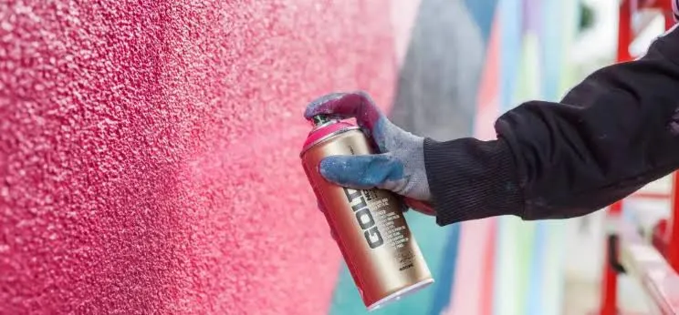

Paint
Unlocking new audiences through insight-led creative strategy

A custom paint brand came to me looking to improve their campaign performance across Meta. They believed that they knew their audience consisted almost exclusively of car-modification enthusiasts, garages, and hobbyists, and that performance had hit a natural plateau, with creative fatigue growing across all core ad sets.
I was tasked with applying my insight-driven creative strategy process to uncover new growth opportunities and build a creative system that better reflected real customer motivations and behaviours.
The challenge
The brand's marketing was built around a single assumed persona: car paint enthusiasts. This limited their creative variety, their messaging, and ultimately their ability to scale. Their problem was the narrow understanding of who was actually buying their products.
In order to drive down acquisition costs and increase efficiency, I needed to:
- Validate (or challenge) the existing audience assumptions
- Identify overlooked customer segments
- Build a creative direction that addressed each group's pain points, motivations, and use cases
- Refresh the ad strategy with diverse hooks, angles, and visuals tied to real customer insight
The solution
Using my creative strategy process, I conducted a deep analysis of customer reviews, language patterns, and purchase motivations. This uncovered a critical insight: a large share of customers weren't buying paint for cars at all. They were customising guitars, furniture, helmets, collectibles, and various DIY projects, an audience the brand had never acknowledged or marketed to.
-
01
Built an expanded persona system
I divided the core “car customisation” persona into more granular beginner, enthusiast and garage-owning car paint purchasers, and created new personas for instrument artists, furniture refinishers, collectors, and creative hobbyists. Each persona included detailed pain points, motivators, goals, and tone of voice, extracted from real customer reviews.
-
02
Developed a creative framework tailored to each persona
Unique hooks and angles for every audience segment, visual concepts aligned to each creative community, and messaging that addressed motivations, pain points and outcomes.
-
03
Launched a structured creative diversification and testing process
Ads were built around true use cases, with variations created for each persona group. Targeting remained simple and broad in accordance with Meta's algorithm, now utilising the ads themselves as targeting signals. This ensured every ad spoke directly to a real audience with a real need, not just the niche the brand thought they were selling to.
The result
Within a short period of launching the new creative system, performance improved significantly.
By uncovering untapped audiences and tailoring creative to their motivations, we unlocked new growth opportunities and transformed a niche-focused brand into a broader, insight-driven business, without changing the product.
Want results like these?
Grab a 30-minute call and we'll work out whether persona-led creative strategy fits your brand.
Next case study